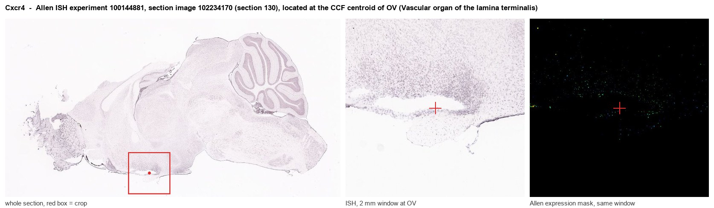
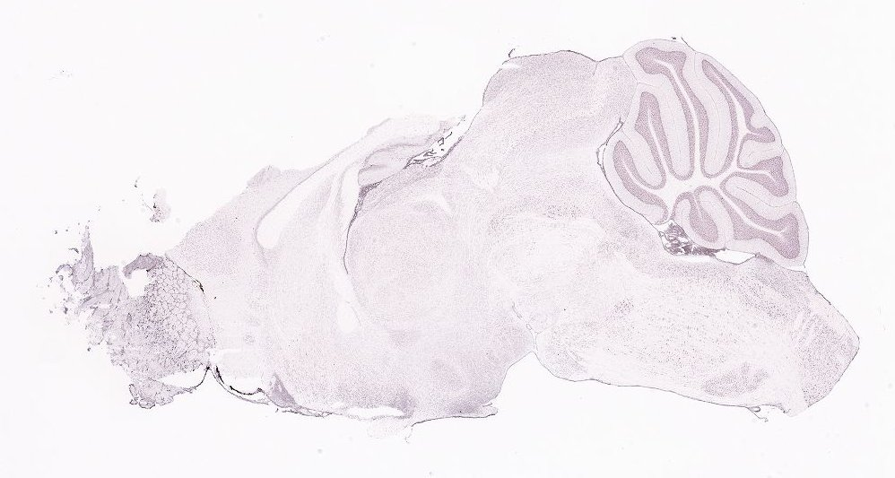
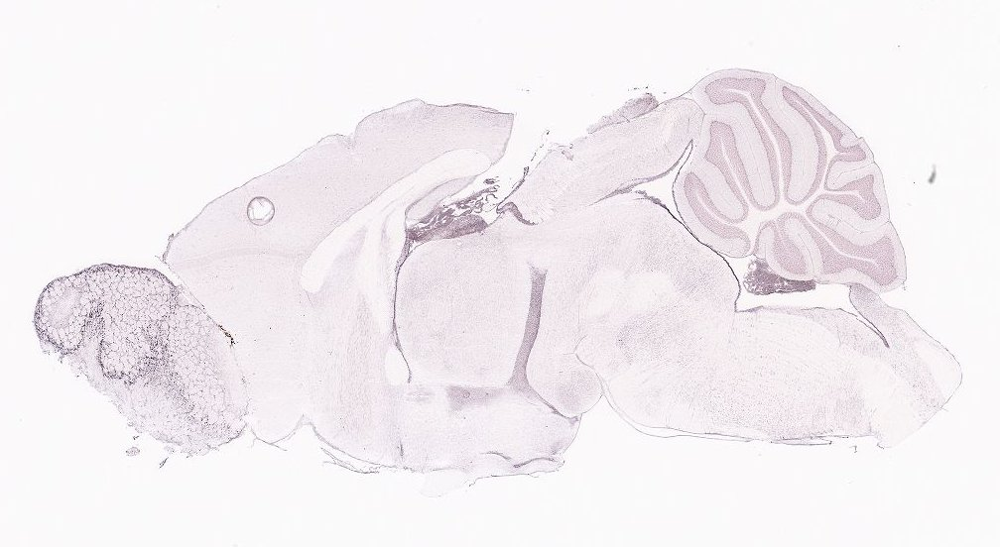
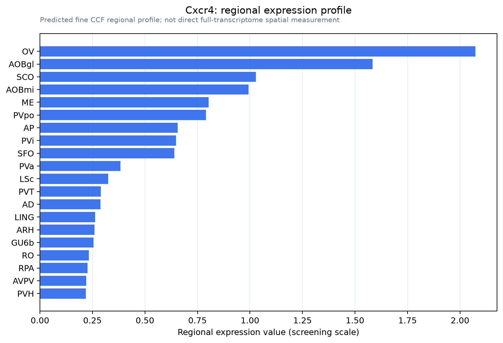

Cxcr4
C-X-C chemokine receptor type 4 (Fusin) (Leukocyte-derived seven transmembrane domain receptor) (Stromal cell-derived factor 1 receptor)
Spatial tier: STRICT_EXCLUSIVE · Class: GPCR · Top region: OV (Vascular organ of the lamina terminalis) · Positive regions: 9/554
Function in OV: evidence, prediction, innovation
- Gene function
- Cxcr4 encodes the Gi-coupled chemokine receptor CXCR4, ligand CXCL12/SDF-1. Activation lowers cAMP, opens GIRK channels, inhibits calcium channels and signals via PI3K/ERK. It guides neuronal migration in development, modulates adult transmitter release, and is the HIV co-receptor.
- Region function
- The vascular organ of the lamina terminalis is a barrier-free circumventricular organ that, with subfornical organ and median preoptic nucleus, senses osmolality, sodium and angiotensin II to control thirst, vasopressin and sympathetic outflow.
- Published in this region
- expression only Callewaere et al. 2006 found strong CXCR4 immunoreactivity in the lamina terminalis, including OVLT and subfornical organ (data not shown), proposing these barrier-free sites mediate SDF-1's blunting of angiotensin II-induced vasopressin release; CXCR4 colocalised with >85% of SON and PVN vasopressin neurons, whose firing SDF-1 altered. Banisadr et al. 2002 mapped constitutive neuronal CXCR4 in rat brain; Wei et al. 2012, central SDF-1 drives sympathetic and neurohumoral excitation in heart-failure rats.
- Predicted function
- Prediction: CXCR4 on OVLT neurons is a blood-facing brake by which circulating CXCL12 tunes osmo- and angiotensin-sensing. Local AMD3100 or OVLT-restricted Cxcr4 deletion should enhance angiotensin-driven drinking and pressor responses; intra-OVLT CXCL12 should suppress firing and water intake.
- Innovation
- ★★★★☆ 4/5 OVLT expression was noted only as unshown data twenty years ago and never tested functionally.
- Tools
- Cxcr4-floxed mice and Cxcr4-EGFP reporters, antagonist AMD3100 (plerixafor), recombinant CXCL12/SDF-1, anti-CXCR4 antibodies; OVLT is targetable stereotaxically and with circumventricular AAV.
- References
Direct evidence located at the region

Allen ISH experiment 100144881, section image 102234170 (section 130): the section that contains the CCF centroid of Vascular organ of the lamina terminalis according to the Allen image-to-atlas alignment (reference_to_image), with a 2 mm window around that point. Left: whole section, red box = window. Middle: ISH signal. Right: Allen's expression-mask view of the same window. open this image in the Allen viewer
Direct spatial evidence



Regional expression figure

Predicted WMB × fine-CCF profile; not direct full-transcriptome spatial measurement.
Spatial profile
Evidence and specificity
- Evidence status
- PREDICTED_FINE
- Direct sources
- None; predicted localization only
- Exclusive threshold
- 12 positive regions out of 554
- Spatial specificity
- 0.393
- Top-region fraction
- 0.128
- Filter status
- PASS
Interpretation limits
- Cell-type-to-region projection is imputed expression, not direct spatial measurement.
- Adult reference atlases do not establish stability across age, sex, strain, state, or disease.
- Transcript abundance does not guarantee protein abundance or genetic-tool performance.